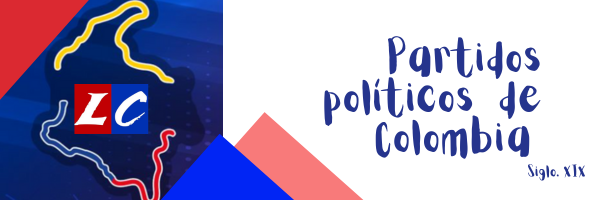
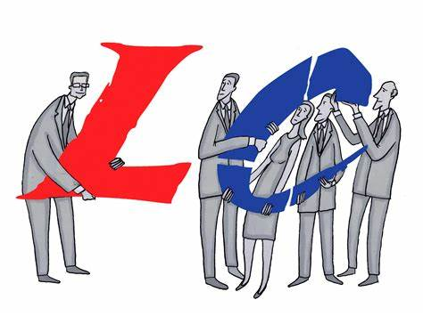
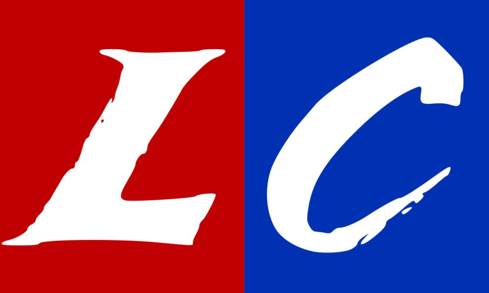
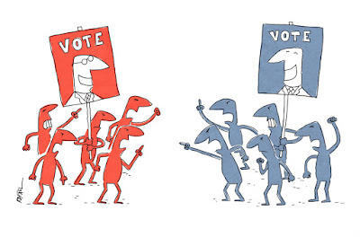
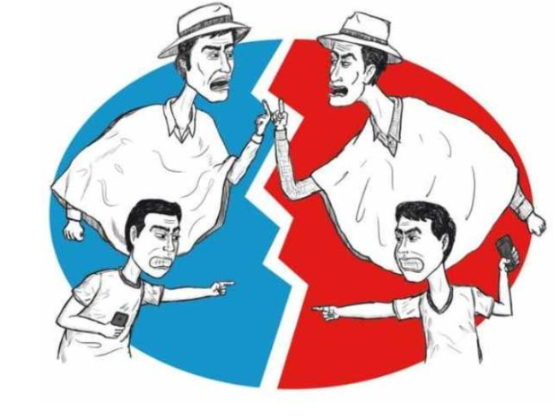

PARTIDOS POLITICOS
¡Hola! ¿Sabías que la historia de Colombia está llena de aventuras y decisiones importantes? Desde que nuestro país obtuvo su independencia, la política ha sido como un gran rompecabezas que ha ayudado a formar lo que somos hoy. Imagina la política como un juego donde diferentes grupos compiten por tomar decisiones importantes para todos.
Los partidos políticos son como equipos que tienen ideas diferentes sobre cómo debe ser nuestro país. Vamos a aprender cómo estos equipos se formaron y han cambiado a lo largo del tiempo.
Cuando Colombia era joven, hubo momentos muy importantes que hicieron que las personas se agruparan en equipos llamados partidos políticos. Algunos querían una cosa y otros, algo diferente. Por ejemplo, hace mucho tiempo, los liberales y conservadores tenían ideas muy distintas sobre cómo gobernar.
En 1848 Colombia vivió un periodo de alteracion política y social marcado por tensiones entre los partidos liberal y conservador, conocidos también como los partidos tradicionales; La lucha por el poder y el enfrentamiento entre ambos partidos generó graves consecuencias para el país.

Origen de los partidos Liberal y Conservador en Colombia
El Partido Liberal representado por una bandera de color rojo; fue fundado por Ezequiel Rojas en 1848,su filosofía defiende la libertad del individuo, entre ellos estaban comerciantes, indígenas, esclavos y artesanos.
El partido conservador conocido por su bandera color azul; fue fundado por Mariano Ospina Rodriguez en 1849, sigue una corriente de pensamiento llamada “Conservadurismo” que defiende el mantenimientos de las tradiciones en la sociedad colonial, terratenientes, esclavistas, militares de alto rango y el clero.

Ideologías de los partidos politicos
Cada partido político tiene su propio conjunto de ideas sobre cómo debería ser nuestro país. Los liberales solían creer en más libertades y cambios, mientras que los conservadores preferían mantener las tradiciones y la estabilidad. Estas ideas, llamadas ideologías, han influido mucho en la historia de Colombia y en cómo se han formado nuestros partidos políticos".
El partido Liberal
Los liberales se basaron en los ideales de Francisco de Paula Santander, para ellos era importante transformar el Estado colombiano, y esto se lograba pasando de tener un sistema político y económico netamente colonial, a un Estado con leyes generales para todos. Por esto, dentro de las reformas que los liberales proponían durante la segunda mitad del siglo XIX, estaban:
- Se identificaron con el color rojo
- Se basaron en las ideas de la ilustración, la revolución francesa y del parlamentarismo inglés
- Separación total de la Iglesia y el Estado.
- Voto universal, directo y secreto
- Apoyaban la abolición de la pena de muerte y de la esclavitud
- Libertad absoluta de imprenta, de palabra y de pensamiento
- Libertad religiosa (de cultos) y libertad de enseñanza.
- Libertad de industria, comercio, de empresa y libertad de cultivos.
- Abolición de los monopolios, de los diezmos y de los censos. Impuesto único y directo.
- Libre cambio y proteccionismo.
- Educación laica
- Libertad de pensamiento
¿Quiénes eran? Santanderistas, radicales, comerciantes y provincianos.
Partido Conservador
Surgió del centralismo, fundado en 1849 por Mariano Ospina Rodríguez, basado en las ideas de Simón Bolívar. Su ideología política se basó en:
- Se identificaron con el color azul
- Fortalecimiento del vínculo entre la iglesia y el estado.
- Conservación de las tradiciones y los valores coloniales.
- Orden mediante un gobierno autoritario.
- Educación orientada por la iglesia Católica.
- Defendía la herencia colonial Centralista y autoritaria recibida de la tradición Española.
¿Quiénes eran? Bolivaristas, moderados, terratenientes y aristocráticos.

Conflictos
- Los conservadores: se opusieron a la aplicación de las libertades individuales y junto con terratenientes y esclavistas, condenaron la abolición de la esclavitud, generando levantamientos armados, que se extendieron a diferentes regiones del país.
- La Iglesia católica: se opuso a las reformas que afectan sus intereses como la libertad religiosa y de enseñanza, la separación entre Estado e Iglesia, la desamortización de bienes de manos muertas y la supresión del diezmo.
- Los draconianos: rechazaron la eliminación de los impuestos para los productos extranjeros, los cuales ingresarían libremente al país. Este aspecto los enfrentó con los comerciantes, quienes defendían esa medida para favorecer las transacciones comerciales
Guerra de los Mil Días (1899-1902)
- Fue uno de los enfrentamientos más largos y devastadores en la historia de Colombia.
- Liberales y conservadores se enfrentaron en una guerra civil por el control político y social del país.
- La lucha dejó miles de muertos y enormes daños a la economía y la infraestructura del país.
La violencia (1948-1958)
- Comenzó tras el asesinato de Jorge Eliécer Gaitán, un líder político carismático.
- La violencia estalló entre seguidores de ambos partidos, llevando a un período de conflicto armado, asesinatos políticos y enfrentamientos violentos en muchas partes del país.
- Miles de personas murieron y comunidades enteras fueron afectadas.
Conflictos Regionales y Luchas de Poder:
- A lo largo de la historia de Colombia, los liberales y conservadores se enfrentaron en conflictos regionales, con disputas por el control político en diferentes áreas del país.
- Estos conflictos a menudo llevaron a enfrentamientos armados y tensiones duraderas entre comunidades.
Consecuencias y Transformaciones Sociales:
- Estos conflictos tuvieron un impacto profundo en la sociedad colombiana, generando desconfianza, divisiones y un legado de violencia que perduró por décadas.
- A raíz de estos enfrentamientos, se buscaron acuerdos políticos que llevaron a cambios en la estructura del país, incluyendo reformas políticas y sociales.

A continuación encontrarás 2 juegos con los cuales podrás comprobar tu aprendizaje
¡Mucha suerte!
Juego #1
Juego #2